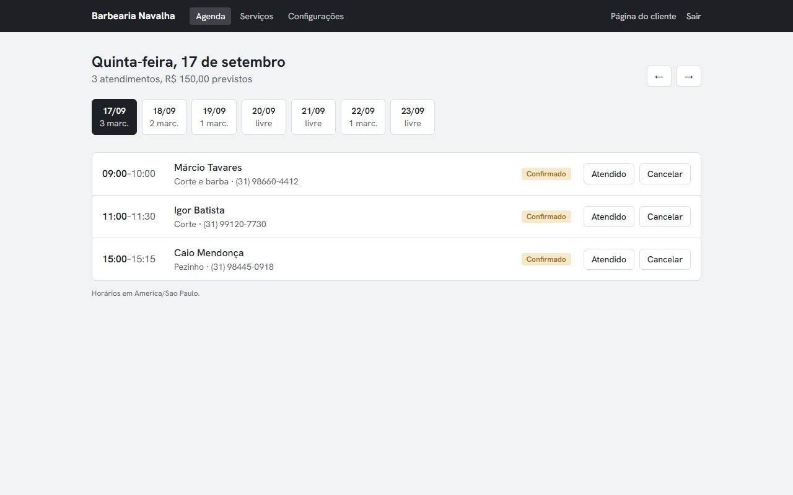

Sistema com login
Agenda para barbearia
O cliente marca serviço e horário por um link, sem criar conta. O barbeiro vê a agenda do dia no celular, marca quem já foi atendido e edita serviços, preços e horário de funcionamento.
- Uma regra no próprio banco impede dois agendamentos no mesmo horário, mesmo que dois clientes confirmem ao mesmo tempo
- Cada barbearia só enxerga os próprios dados (Row Level Security, testado simulando outro usuário)
- Tem conta de demonstração que volta ao original toda madrugada
Next.js · TypeScript · Supabase · PostgreSQL